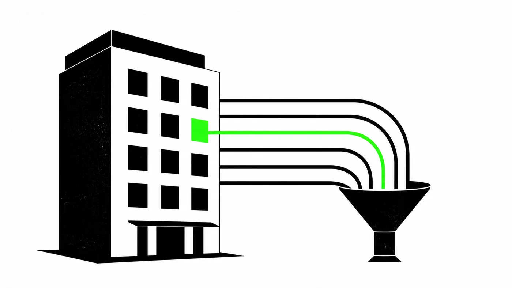

Analítica web para hoteles: KPIs, embudo y trampas del sector

La analítica web de un hotel mide un negocio con reglas propias: la conversión vive en el motor de reservas, la venta puede cancelarse semanas después de celebrarse y el precio compite en tiempo real contra las OTAs. Llevo la medición del embudo de reserva de más de 1300 webs de hotel, y las diferencias con un ecommerce clásico cambian la forma de leer cada informe. Estas son las que más cuestan de aprender desde fuera del sector.
El embudo tiene cuatro pasos y no es lineal
En un motor de reservas típico, el camino a la compra se mide en cuatro pantallas: selección de habitación y tarifa, extras, datos del huésped y confirmación. En mis informes viven como booking1 a booking4, y cada transición cuenta una historia distinta: la primera habla de precio y disponibilidad, la última de fricción en el pago.
Dos rarezas que descolocan al que viene del ecommerce:
- Hay pasos que superan el 100% de avance. El paso de datos recibe entradas que se saltan los anteriores: enlaces directos de campañas de email, flujos de hotel más vuelo, presupuestos guardados. Un embudo hotelero se parece más a una rotonda que a un tobogán, y quien lo lee como línea recta saca conclusiones equivocadas.
- El mismo motor rinde distinto en cada hotel. He visto portfolios donde, con el mismo software y las mismas pantallas, una propiedad avanza al segundo paso el 70% de las sesiones y otra el 25%. La diferencia de 40 puntos con el mismo motor descarta al software como sospechoso: ahí se mira tarifa, fotos, disponibilidad del calendario y qué promesa trajo a ese tráfico hasta la puerta.
Los KPIs que un ecommerce ni conoce
| KPI | Qué mide | Qué decisión alimenta |
|---|---|---|
| Precio medio por noche | Tarifa media vendida (el ADR del revenue manager) | Si la caída de ingresos viene de vender menos o de vender más barato |
| Room nights | Noches vendidas, el volumen real | Ocupación con la que planifica operaciones |
| Anticipación | Días entre reserva y llegada | Cuándo lanzar campañas y ofertas por mercado |
| Estancia media | Noches por reserva | Valor del huésped y mínimos de estancia |
| Ratio de cancelación | Reservas anuladas sobre el total | Política de tarifas flexibles frente a no reembolsables |
| Índice de paridad | Veces que el precio directo gana a las OTAs | Si tiene sentido invertir en captación esta semana |
Un descenso de ingresos se diagnostica cruzando los tres primeros: menos noches con la misma tarifa es un problema de demanda; las mismas noches con tarifa inferior es una decisión de revenue; ambos a la vez, un trimestre para enmarcar en la pared del sufrimiento.
GA4 nunca ve todas las reservas
El motor tiene un backend que registra el 100% de las operaciones. GA4 registra las que el navegador le deja ver: en los portfolios que mido, entre el 70 y el 85% de las reservas, y la cifra baja cada trimestre por las restricciones de Safari, los bloqueadores y el consentimiento. Mi rutina en cada informe es publicar la cobertura: qué porcentaje del backend llegó a GA4 ese trimestre.
El truco para diagnosticar en dos minutos: compara el ticket medio de ambas fuentes. Si GA4 valora cada reserva casi igual que el backend pero le faltan operaciones, tu problema es cobertura, y las tendencias relativas entre canales siguen valiendo. Si el ticket medio también baila, tienes un problema de implementación en el purchase, y entonces no te fíes ni de las tendencias.
La regla práctica: el backend responde cuánto se vendió; GA4 responde por dónde llegó y dónde se atascó. Sumar reservas de GA4 para contárselas a dirección acaba en una reunión incómoda.
La cancelación convierte la venta en una hipótesis
En hotelería la conversión no cierra el ciclo: una reserva con tarifa flexible es una intención con derecho a arrepentirse. El patrón crece cada año: el huésped reserva con más anticipación, bloquea precio con tarifa cancelable y decide de verdad más cerca de la fecha. Más anticipación con más cancelación no es contradicción, es el mismo comportamiento visto por sus dos caras.
Consecuencia para la medición: los informes van por duplicado. Por fecha de reserva para evaluar campañas y captación, y por fecha de estancia para hablar con revenue y operaciones. El revenue cancelado merece su propia serie: un trimestre puede celebrar récord de ventas brutas y esconder que una de cada diez se esfumó.
La paridad manda sobre el CRO
El dato más incómodo que le he puesto delante a un hotel: el porcentaje de comprobaciones en las que su web vendía la misma habitación al mejor precio disponible. Cuando ese índice queda por debajo del 50%, la mitad de tu tráfico compara y encuentra la habitación más barata en una OTA con la que además llevas años peleándote.
Con paridad rota, la conversión del motor deja de ser un indicador de UX: puede estar impecable el diseño, el copy y la velocidad, que el visitante hace su papel, mira, compara y reserva en otra parte. Por eso la paridad se revisa antes de tocar la web. Optimizar botones con el precio perdido es ordenar la cubierta del Titanic.
La estacionalidad rompe las comparativas trimestrales
Comparar un trimestre con el anterior funciona en un SaaS y engaña en un resort: temporada alta contra temporada media produce caídas del 30% que asustan en la portada del informe y desaparecen al comparar con el mismo trimestre del año anterior. La interanual es la comparación que dice la verdad sobre el estado del negocio; la trimestral solo sirve para vigilar la ejecución.
El mismo cuidado aplica por mercados: cada país emisor tiene su calendario de vacaciones, y un desplome del mercado argentino o canadiense puede ser divisa y estacionalidad antes que un problema de tu web.
Móvil: tres de cada cuatro visitas, una fracción del ingreso
En los portfolios que mido, el móvil aporta en torno al 75% de los usuarios y bastante menos de la mitad del ingreso registrado. Antes de rediseñar nada, dos matices: el viaje se investiga en el móvil durante semanas y se paga en el escritorio en una tarde, así que parte del ingreso de escritorio lo sembró el móvil sin llevarse la atribución. Y la pérdida de medición castiga más al móvil, donde las restricciones de cookies son más agresivas, así que su ingreso real es mayor que el que muestra GA4.
El móvil casi siempre tiene margen de mejora en el motor, y aún así conviene medirlo con estas dos correcciones en mente antes de declarar la emergencia.
Preguntas frecuentes
¿Sirve GA4 tal cual para un hotel?
Sirve como fuente de adquisición y comportamiento si el motor empuja un dataLayer de ecommerce completo en los cuatro pasos. Como fuente de ingresos totales, no: esa verdad vive en el backend del motor, y el informe honesto usa las dos fuentes y declara cuál responde cada pregunta.
¿Qué conversión es normal en un motor de reservas?
Entre el 1 y el 2,5% de las sesiones que entran al motor terminan en reserva en la mayoría de los casos que veo, con la paridad y el mercado moviendo ese rango. La comparación útil rara vez es contra el sector: es contra tu propio hotel el año pasado y contra las propiedades hermanas del mismo motor.
¿Por fecha de reserva o por fecha de estancia?
Las dos, para preguntas distintas. Fecha de reserva para campañas y marketing; fecha de estancia para revenue, ocupación y operaciones. Los problemas llegan cuando una reunión mezcla las dos sin avisar.
¿Tu embudo de compra tiene varios pasos y no sabes dónde se cae la gente? El principio es el mismo en cualquier checkout: medir cada paso, cruzar con el backend y saber qué pregunta responde cada fuente.
Ver los servicios →